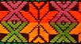
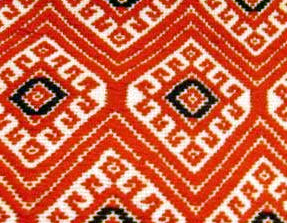
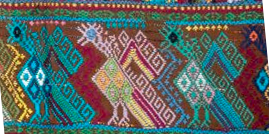

Retos 2
Retos Algorítmicos
Usted encontrará algunos de los mismos patrones que exploramos en perlas ocurren en tejidos, así como nuevos. Por ejemplo, aquí hay algunos patrones mayas a continuación. Experimente con la simulación en
para hacer diseños de su propia elección o copias de patrones tradicionales. ¿Puede crear diseños con triángulos especiales como 30-60-90? ¿Equilátero? ¿Qué cálculos se necesitan para crear estos en diferentes tamaños?

Estrella de la creación
Diseños adicionales

Cosmograma

Pavos salvajes